Creating an Approachable Data Product with R
Using Shiny and rCharts
William Surles
Product Data Scientist @ Rally Software
Intro
A D3 chart
Quiz
How many lines of code did I write to make this chart?
- 1
- 10
- 100
- 1000
I used R not javascript/html/css
n1 <- nPlot(y ~ x, group = , data = , type =)
About Me
- Mech Engr -> Building Energy Researcher -> Data Scientist
- Product Data Scientist at Rally Software
- Love exploring tools and techniques
Who is Rally?
How I work with teams
- I focus on product usage
- Data engineers and programmes
- Product owners and Developer teams
- Sales and Enablement teams
Goal for Presentation
- I want to share everything I have learned with you
- 1 year of making shiny work in business
- I have figured out many small things that make it powerful
- Take it, Learn it, Change it, Improve it
Outline
- Tool Overview
- Business value
- Demo
- Steps to make a shiny app
- Code chunks
Tool Overview
What is Shiny?
Shiny
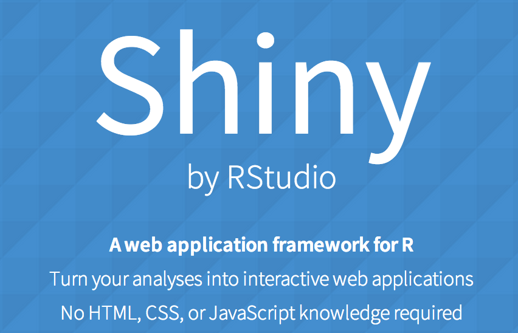
Simple Shiny App
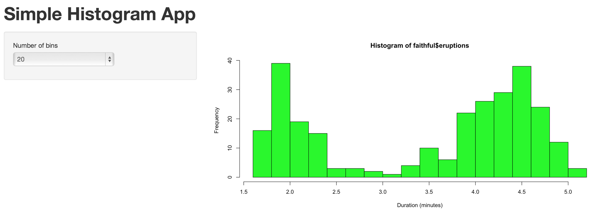
ui.R
shinyUI(pageWithSidebar(
headerPanel("Simple Histogram App"),
sidebarPanel(
selectInput(inputId = "n_bins",
label = "Number of bins",
choices = c(10, 20, 25, 30, 50),
selected = 20
)
),
mainPanel(
plotOutput(outputId = "main_plot")
)
))
server.r
shinyServer(function(input,output){
output$main_plot <- renderPlot({
hist(faithful$eruptions,
breaks = as.numeric(input$n_bins),
col = "green",
xlab = "Duration (minutes)")
})
})
Advanced Shiny App
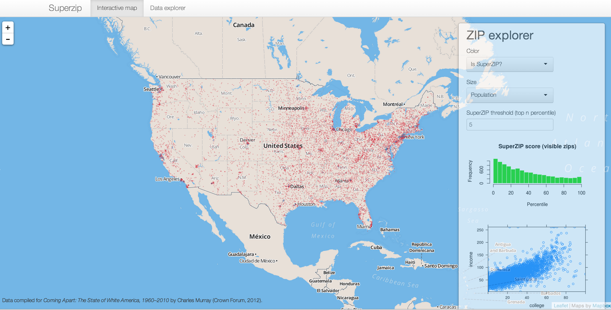
Check out more examples
http://shiny.rstudio.com/gallery/
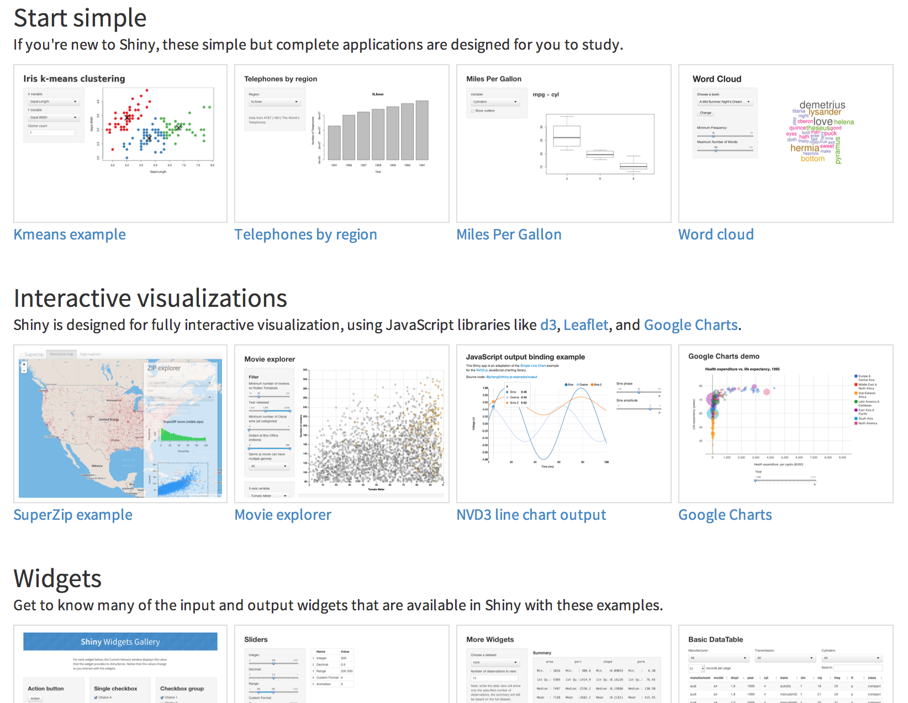
What is rCharts?
rChart
rChart code
require(rCharts)
require(knitr)
haireye = as.data.frame(HairEyeColor)
n1 <- nPlot(Freq ~ Hair,
group = 'Eye',
data = subset(haireye, Sex == 'Male'),
type = 'multiBarChart'
)
n1
Shiny and rChart
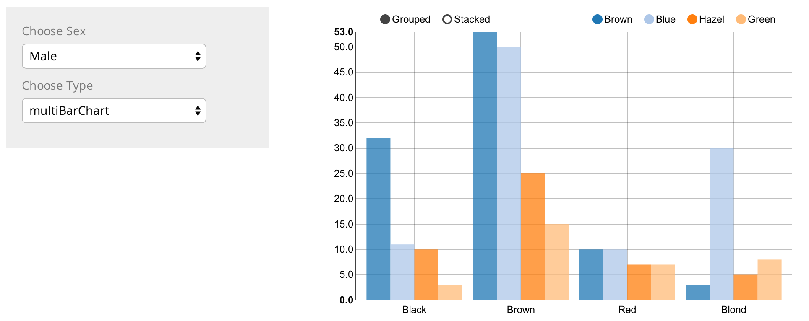
More rChart examples
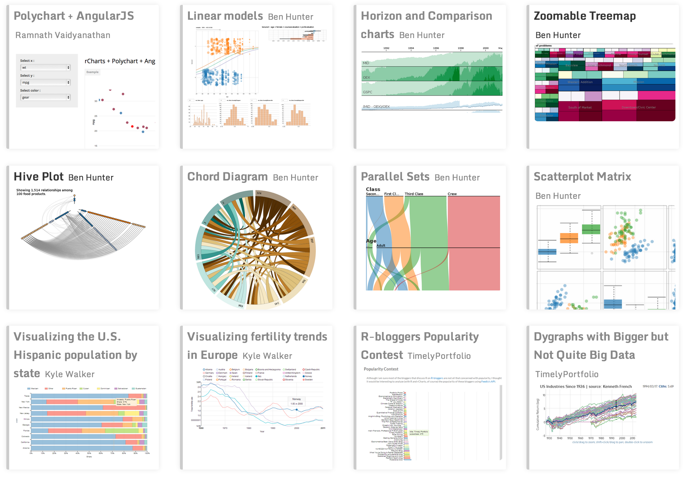
Business Value
Product Data Hub
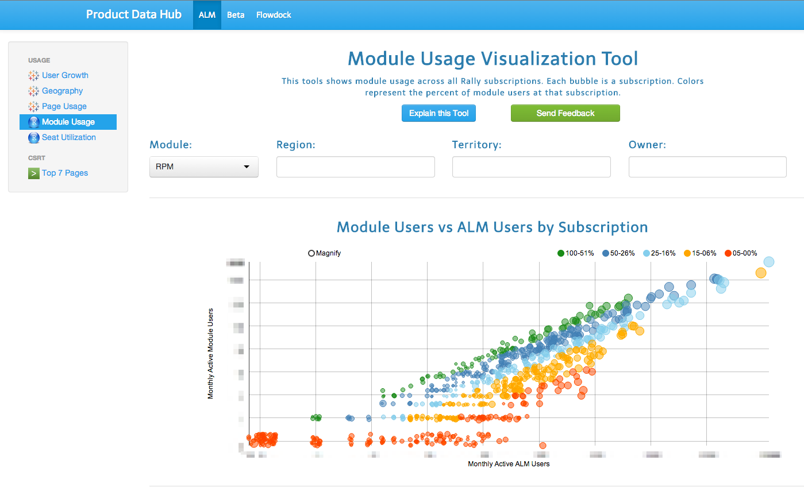
Product Data Hub
- Built with R using Shiny and rCharts
- Interactive analysis and charts
- Embed other dashboard here also
- Serves many teams in Product and Sales
Top 3 Reasons for Shiny
- Interactive - Individuals can easily slice and dice data
- Removes interrupts - Don't have to re-run and re-share analysis.
- Cheap - Free to build and share
More Reasons for Shiny
- Customizable - Pick your colors and style and layout
- Simple - One place to see everything that matters
- Extensible - Web functionality (navigation, modals, styles)
Top 3 Reasons for rCharts
- Tooltips - Answers the next questions
- Beautiful - Looks great and D3 is amazing
- Density - Change the view right there
More Reasons for rCharts
- Simple - Don't need to write 3 languages
- html, css, javascript
- Unique - There are charts that no other library can make
- Presentation - Sharing is such a key part of the data flow
Demo
Github Hot or Not Shiny App
http://surlyanalytics.shinyapps.io/github_hot_or_not/

App repo
- https://github.com/wsurles/github_hot_or_not
- Learn how to code this app
- Help me make it better
- Thanks!
Shiny workshop
- https://github.com/wsurles/shiny_workshop/tree/advanced
- Build 3 apps self paced
- Progressively more powerful
- The steps are smooth. It has been tested.
Steps to make a shiny app
Add inputs
http://shiny.rstudio.com/gallery/widgets-gallery.html
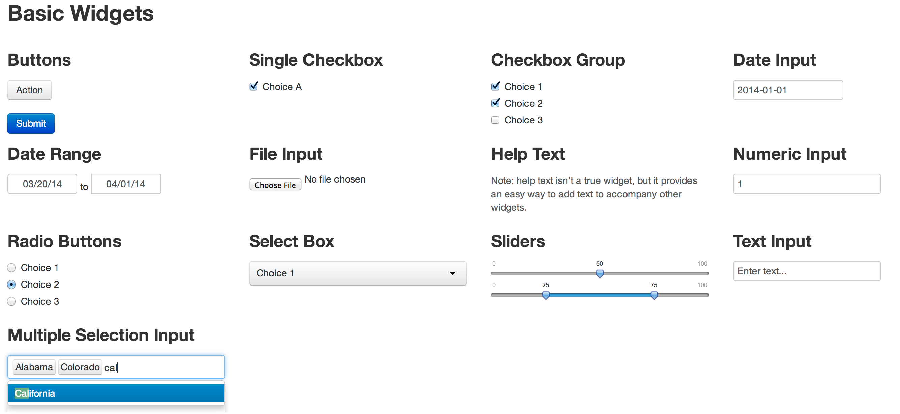
Build charts and tables
http://shiny.rstudio.com/reference/shiny/latest/
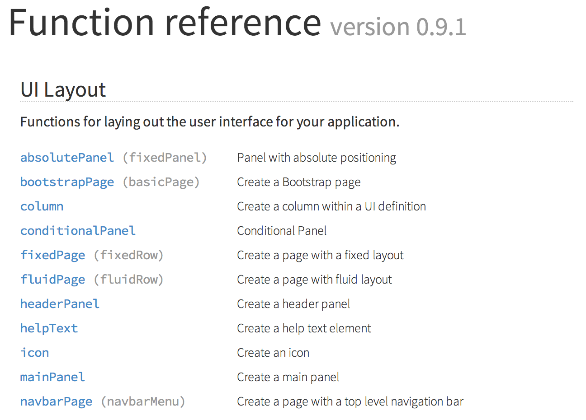
Add navigation
http://shiny.rstudio.com/reference/shiny/latest/
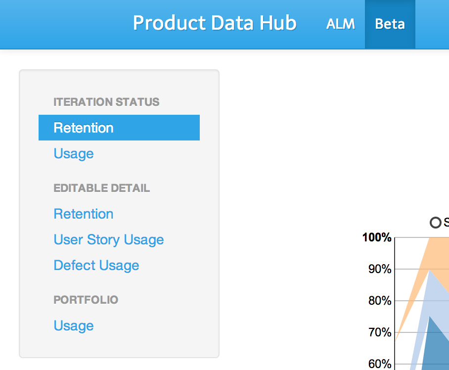
Chose a theme
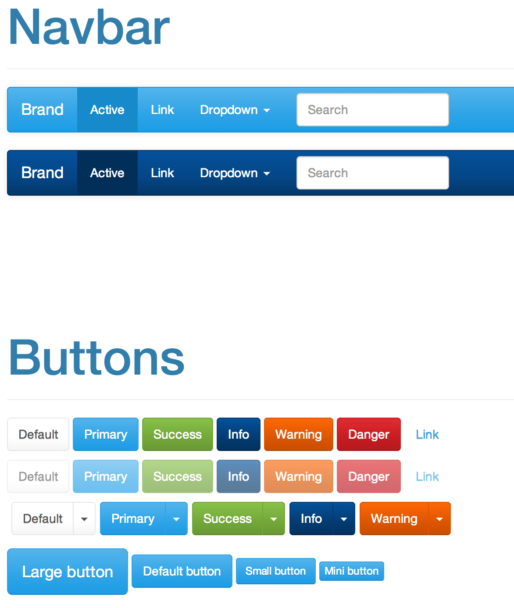
Embed other pages
tabPanel("tableau", includeHTML("tableau_dashboard.html"), align = 'center')
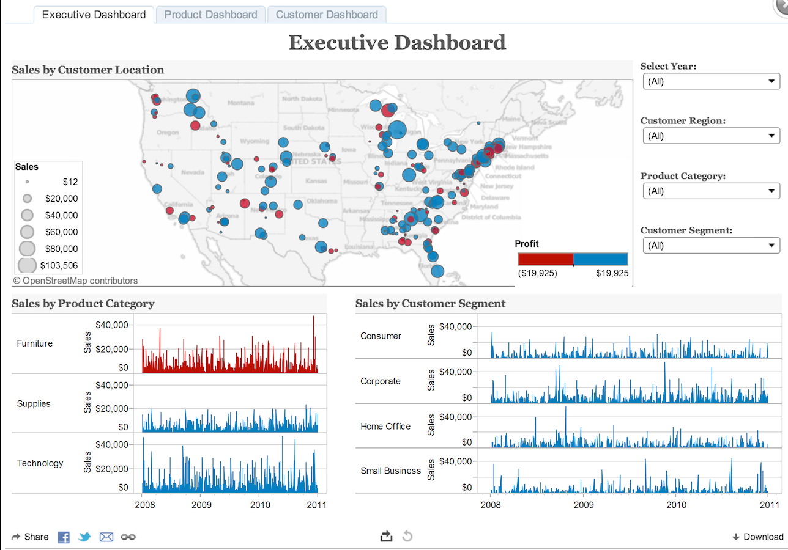
Code Chunks
R structure
Use functions
output$plot_github <- renderChart2({
df <- chooseLang()
df2 <- crunchDataGithub(df)
df3 <- filterGithub()
color <- setColorGithub(df2,df3)
n <- createPlotGithub(df3, color)
})
Dynamic UI elements
Build ui elements in server.R
output$repo_owner <- renderUI({
df <- chooseLang()
df2 <- crunchDataGithub(df)
owner_list <- sort(unique(df2$repository_owner))
selectizeInput(inputId = "owner",
label = h4("Owner:"),
choices = owner_list,
multiple = TRUE)
})
Scatter Chart
createPlotGithub <- function(df2, color) {
df3 <- select(df2, repository_watchers, age_days, watch_group, log_forks,
repository_name, watch_per_day, repository_owner,
repository_forks, date_created_str)
p <- nPlot(repository_watchers ~ age_days,
group = 'watch_group',
data = df3,
type = 'scatterChart')
p$yAxis(axisLabel = 'Stars')
p$xAxis(axisLabel = 'Age in Days')
p$chart(color = color)
p$chart(size = '#! function(d){return d.log_forks} !#')
return(p)
}
Tooltip
p$chart(tooltipContent = "#!
function(key, x, y, d){
return '<h3>' + d.point.repository_name + '</h3>' +
'<p> <b>' + d.point.watch_per_day + ' Stars/Day' + '</b> </p>' +
'<p> Owner = ' + d.point.repository_owner + '</p>' +
'<p> Age in Days = ' + d.point.age_days + '</p>' +
'<p> Stars = ' + d.point.repository_watchers + '</p>' +
'<p> Forks = ' + d.point.repository_forks + '</p>' +
'<p> Date Created = ' + d.point.date_created_str + '</p>'
}
!#")
Add javascript
createButtonLink <- function(link, text) {
sprintf('
<a class="mcnButton"
href="%s"
target="_blank"
style="font-weight: normal;
background-color: #337EC6;
...
color: #FFFFFF;
word-wrap: break-word !important;
font-family:Arial;"
>%s</button>
',link, text)
}
Add css and style
shinyUI(
navbarPage(
id = "nbp",
title = "Data Hub",
theme = "bootstrap.css",
...
Resources and References
Shiny http://shiny.rstudio.com/
Shiny tutorial https://github.com/wsurles/shiny_workshop
rCharts http://rcharts.io/
Slidify http://slidify.github.io/
Slidify example http://slidify.github.io/dcmeetup/#1